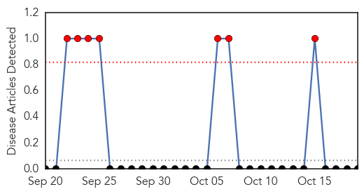
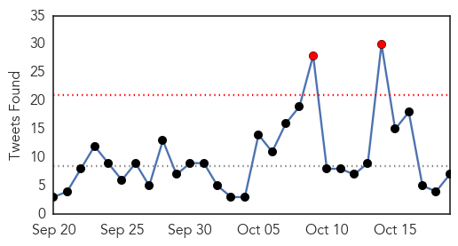

Hemmorhagic Fever
30-Day Web Trend
7 alerts, 0 warnings

30-Day Twitter Trend
0 alerts, 0 warnings

Article Locations

Article Confidences

Top Articles:
-
No articles found for Oct 19, 2015
Top Tweets:
-
No tweets found for Oct 19, 2015
Ebola
30-Day Web Trend
3 alerts, 0 warnings

30-Day Twitter Trend
2 alerts, 0 warnings

Article Locations

Article Confidences

Top Articles:
- 1.000
- Condition of hospitalized Ebola nurse in United Kingdom worsens
- 1.000
- William P.J. Lynch Jr.comWilliam P.J. Lynch Jr.com
- 1.000
- Post-Ebola Syndrome
- 0.999
- UK nurse who survived Ebola may have rare case of relapse
- 0.999
- UK Ebola Nurse 'Critically Ill' as Her Condition Worsens, Says London Hospital
- 0.999
- Ebola: Persistent, and No Visa Required
- 0.996
- Two New Ebola Cases Found In Guinea, Dashing Hopes
- 0.989
- Ebola beds saved 40,000 in Sierra Leone
- 0.986
- Condition of British Ebola Nurse Pauline Cafferkey Improves
- 0.985
- Condition of British Ebola nurse improves
- 0.985
- Scottish nurse who contracted Ebola is now in stable condition
- 0.984
- Ebola nurse's condition 'has improved'
- 0.983
- Scottish Ebola nurse Pauline Cafferkey improves to serious but stable
- 0.980
- Scottish nurse who contracted Ebola is now in stable condition
- 0.980
- Pauline Cafferkey now stable after Ebola relapse left her fighting for life
- 0.979
- Ebola-hit nurse 'critically ill' in London hospital
- 0.977
- Hospital, Others news, Health News, AsiaOne YourHealth
- 0.970
- Handling Medical Waste in an Era of Emerging Pathogens Advice from Expert Facilities
- 0.960
- Staying safe in Liberia with water and soap
- 0.956
- British Ebola nurse's condition improves to serious but stable
- 0.956
- British Ebola nurse's condition improves to serious but stable
- 0.917
- Condition of British Ebola nurse improves
- 0.904
- Ebola nurse Pauline Cafferkey’s condition improves
- 0.888
- British Ebola nurse's condition improves
- 0.874
- Ebola-hit nurse's condition improves
- 0.861
- High Profile APHL Team Explores MOHS Public Health Laboratory Priority Needs
- 0.835
- Lorraine Kelly in ‘Ebola scare’ following contact with stricken nurse
- 0.807
- Ebola worst infectious disease in world, says Ulster Hospital medic
- 0.789
- Ebola nurse Pauline Cafferkey's condition improves to 'serious but stable'
- 0.784
- Scots Ebola nurse no longer critically ill as condition improves
- 0.783
- Ebola nurse condition 'has improved'
- 0.776
- British Ebola Nurse's Condition Improves
- 0.758
- UNICEF Guinea Ebola Situation Report, 14 October 2015 - Guinea
- 0.751
- Ebola nurse Pauline Cafferkey now 'serious but stable' as condition improves
- 0.701
- Pauline Cafferkey's condition improves
- 0.668
- British Ebola nurse Pauline Cafferkey's condition 'has improved' in London hospital
- 0.668
- School of Arts and Sciences: Summer Scholars program provides funding and mentorship for student research projects
- 0.591
- Pauline Cafferkey is winning her battle to live
- 0.560
- UCTH commends FG over intervention
- 0.548
- Sierra Leone News: Salone on the right track of recovery-New Chinese Councellor « Awoko Newspaper
Top Tweets:
- 0.821
- Relapsed Ebola patient's condition improves says UK hospital - CNN International http://t.co/bM9tczfcJG ebola EVD
- 0.806
- Condition of British Ebola nurse improves: hospital - Medical Xpress http://t.co/4XEmn2YUFj ebola EVD
- 0.713
- 'Totally unprecedented': British nurse suffers from Ebola relapse - ChristianToday http://t.co/K52EneLCzs ebola EVD
- 0.698
- Lorraine Kelly in 'Ebola scare' following contact with stricken nurse - Closer http://t.co/LfjK1S3hnU ebola EVD
- 0.678
- British Ebola nurse's condition improves to serious but stable - Reuters UK http://t.co/YZuzZU83lb ebola EVD
- 0.600
- Ugandan scientist develop 5 minute Ebola test kit - GhanaWeb http://t.co/a3mpVJf9Qn ebola EVD
- 0.551
- Ebola scare: UCTH commends FG over intervention - Daily Sun http://t.co/m0opem7xZ9 ebola EVD